Ресторан
Здоровые привычки внедряем каждый день
Вам не нужно думать о пользе блюда — мы сделали это за вас. Позвольте себе открыть уральскую кухню заново.
Музей временно работает в тестовом режиме
Путь к долголетию
Каждый зал — путешествие сквозь время: от настоящего к прошлому и будущему
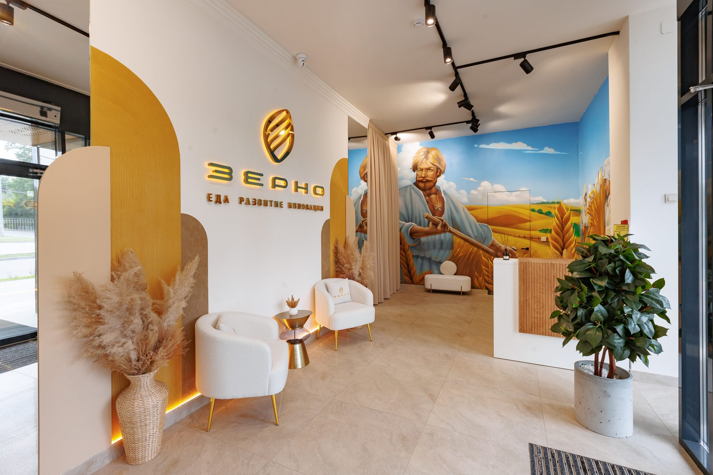
От неолита до наших дней
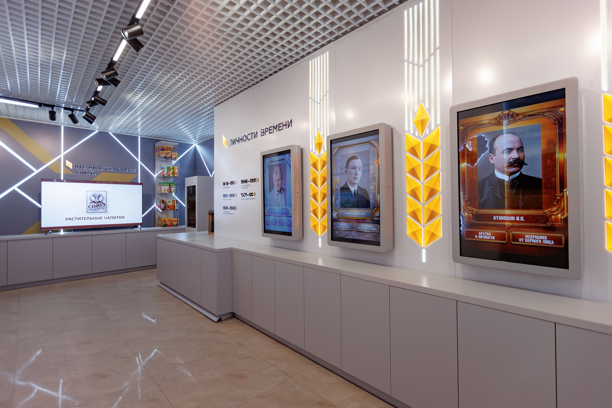
Кузнецов. Григорович. Берестов. Каждый — творец своей эпохи
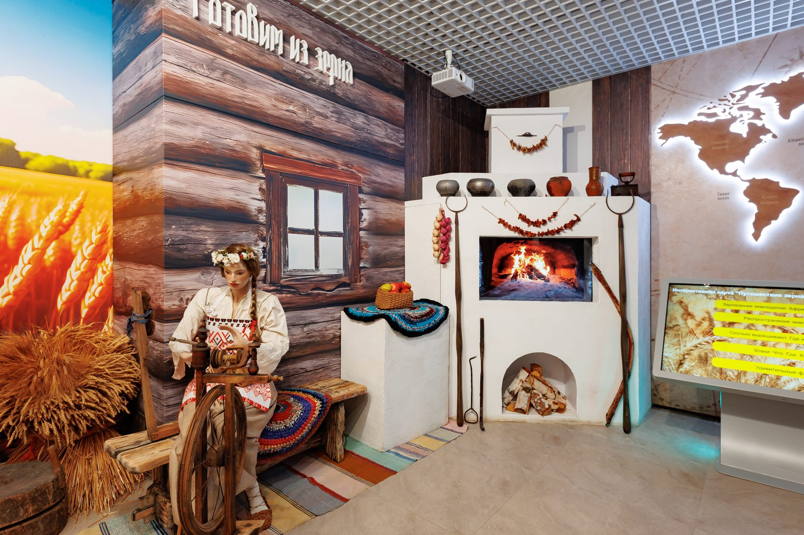
Исследуйте зерно под микроскопом
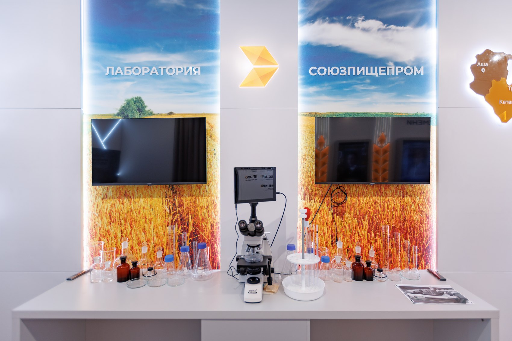
Откройте полезные свойства каждой крупы
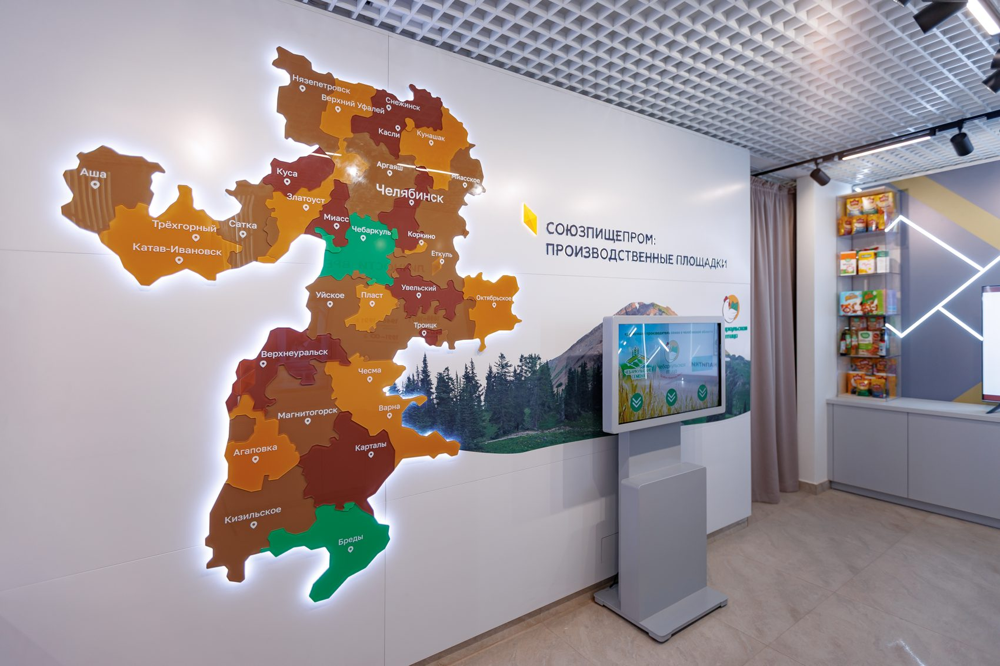
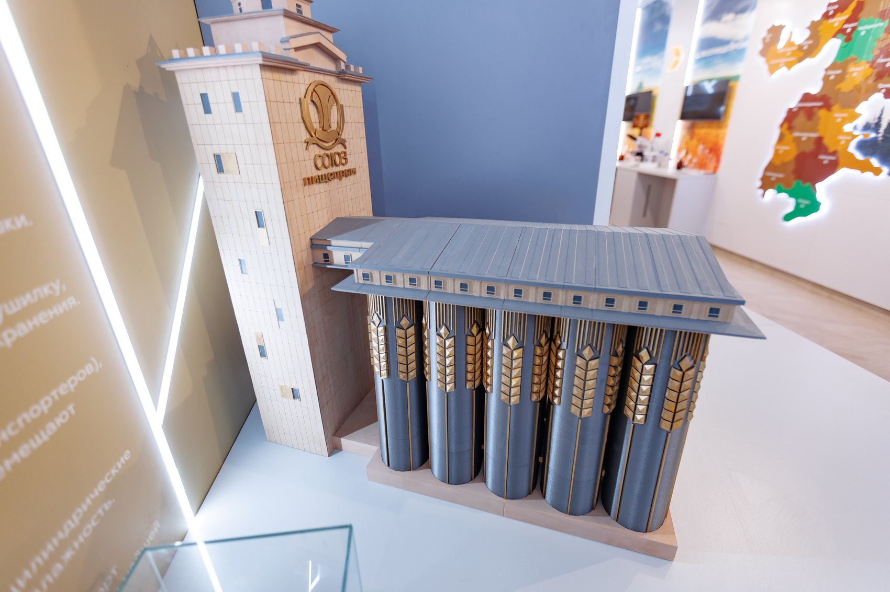
От зерна — к готовому продукту
Зерно, мука и хлеб — от старинных уральских рецептов до современной кухни
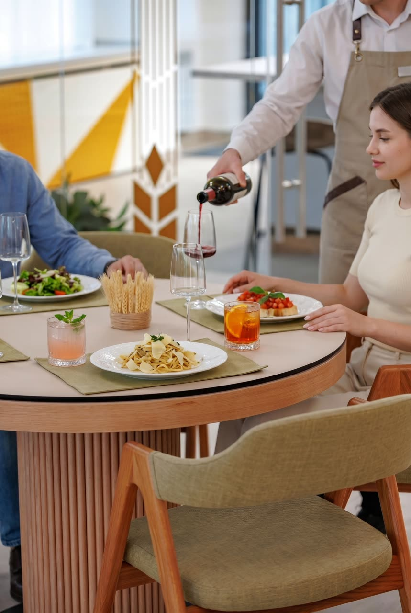
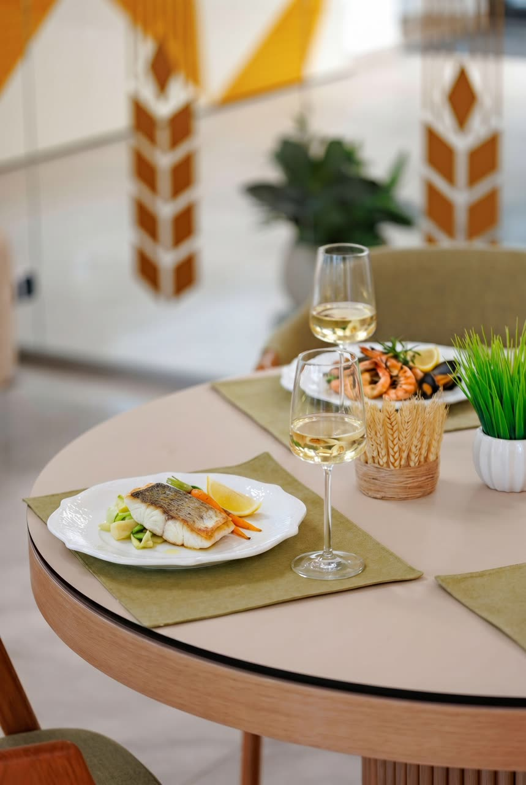
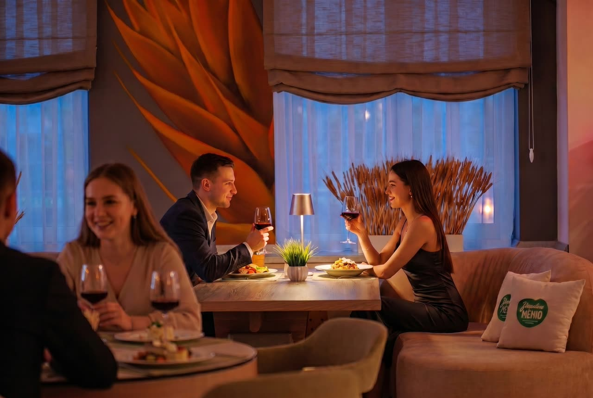
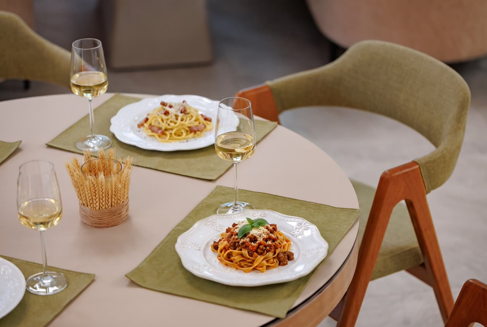
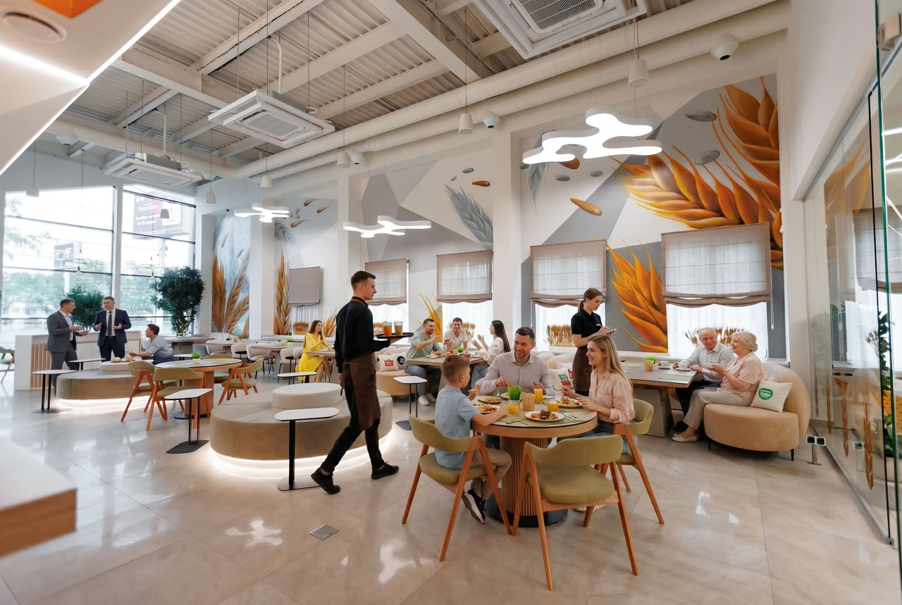
Забронируйте столик и ознакомьтесь с меню
Лекции от лучших спикеров в сфере Horeca, нутрициологии и полезного питания
Путеводитель по самым вкусным событиям месяца
Ресторан
Вам не нужно думать о пользе блюда — мы сделали это за вас. Позвольте себе открыть уральскую кухню заново.
21 августа
Живая музыка, приглушённый свет и бокал вина — провожаем август не спеша. Столики у окна разбирают первыми, торопитесь!
18 сентября
С шеф-поваром ресторана «Зерно» вы научитесь не просто готовить, вы проживёте историю: от выбора ингредиентов до финального приготовления. Бронируйте место заранее.
Меню
Мы бережно храним наследие предков и культивируем здоровое питание. Наше меню создано с учётом уральских традиций и полезного сочетания ингредиентов.
Мы с женой постоянно исследуем новые места Челябинска. Музей зерна стал одним из них. Приятно удивлены сервисом и вкусным ужином.
Проходили мимо и увидели большую вывеску в центре города: Музей зерна. Зашли туда и вкусно пообедали. А вечером девушка записала нас на экскурсию. По итогу, нам очень понравилось: и интересно, и вкусно. Записались ещё на мастер-класс.
Были с детьми на экскурсии, им очень понравилось. Спасибо экскурсоводу Ольге
Оставьте ваш отзыв или посмотрите 250+ отзывов других людей
Мы находимся в городе Челябинск — столице Южного Урала